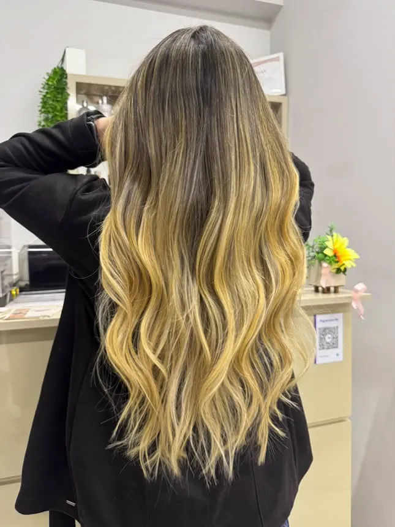
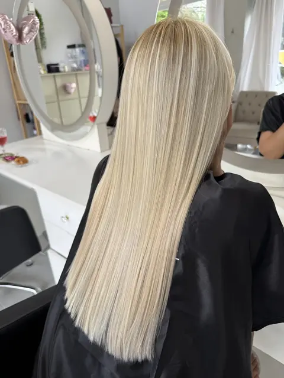
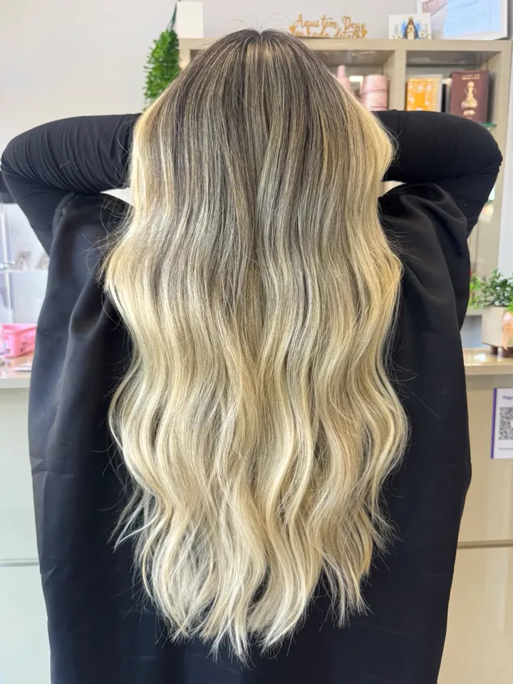
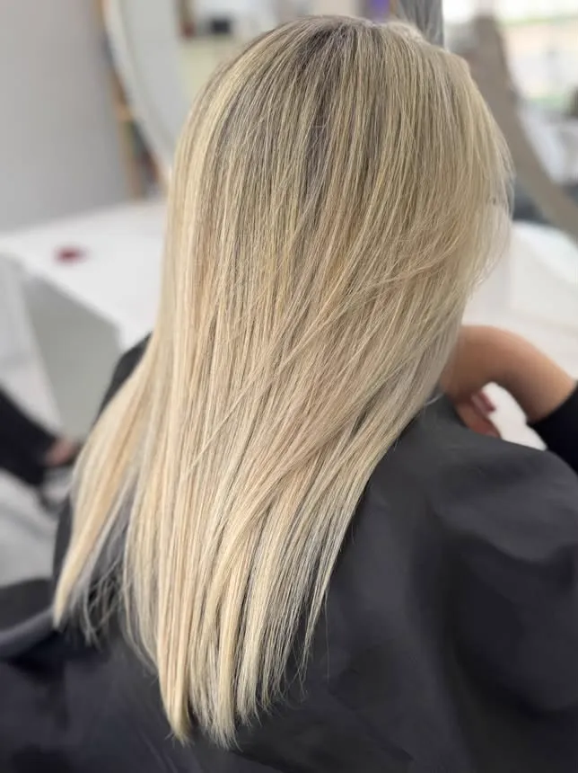
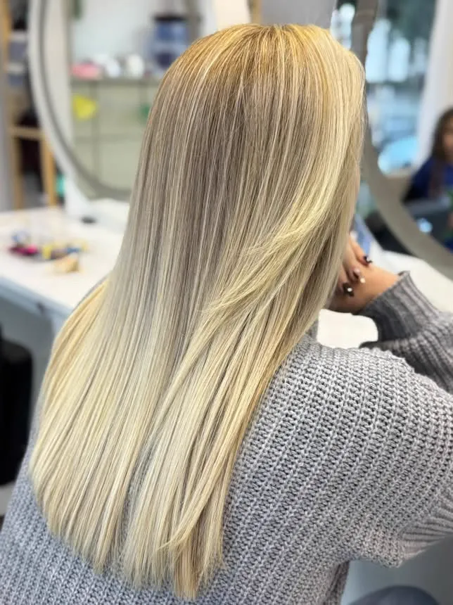

Início / Antes & Depois
GaleriaAntes & depois
Resultados reais de clientes do studio: alisamentos, loiros e a transformação completa em vídeo.
Arraste e compare
Arraste a linha no meio da foto: à esquerda o antes, à direita o depois.



Nossos loiros
Trabalhos de loiro feitos no studio, do iluminado ao platinado.








